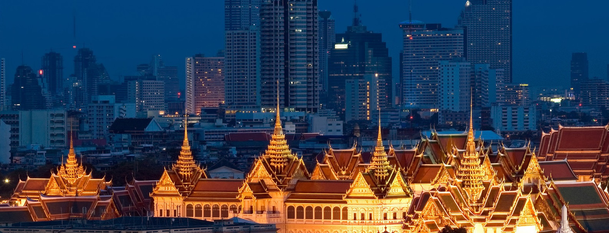
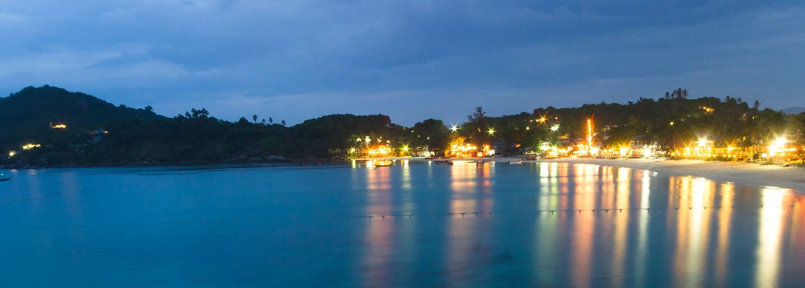

THE GRAND PALACE

The construction of the Grand Palace started in 1782 when the capital of Siam was moved from Thonburi to Bangkok.
The palace served as the residence of the Kings of Thailand until the mysterious death of King Ananda Mahidol in 1946.
His brother King Bhumibol Adulyadej who succeeded him moved permanently to the Chitralada Palace.
The Grand Palace covers a wide range of architectural styles, ranging from a pure Ayutthayan style of the temples
to a blend of Thai and Western for later structures.
It also includes the Wat Phra Kaew, home to the Emerald Buddha,
one of the oldest and most famous statues of the Buddha in the world.
RAILAY

.Railay beach (or Rai Leh) is a small peninsula that is only accessible by boat due to the high
limestone cliffs cutting off mainland access.
These cliffs attract rock climbers from all over the world, but the area is also a popular attraction in Thailand
due to its beautiful beaches and quiet relaxing atmosphere.
Accommodation ranges from inexpensive bungalows popular with backpackers and climbers,
to the renowned jet-set resort of Rayavadee.
KO PHI PHI

Ko Phi Phi is a small archipelago in the Krabi Province in Southern Thailand.
Ko Phi Phi Don is the largest island of the group, and is the only island
with permanent inhabitants while the smaller Ko Phi Phi Leh is very popular as a beach or dive excursion.
Tourism on Ko Phi Phi has exploded only very recently, especially after Ko Phi Phi Leh
was used as a location for the 2000 movie The Beach.
As a result of the masses of tourists Ko Phi Phi is becoming less and less attractive but for now it is still a very beautiful place to visit..